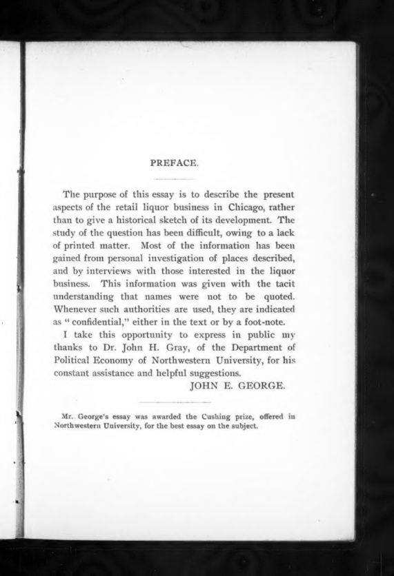

George, 1897: quem financiava os saloons de Chicago?
Leitura: 16 min
Em 1897, John E. George contou os 6.522 saloons de Chicago e seguiu o dinheiro: cervejarias com capital inglês, licenças de US$ 500 adiantadas aos donos de bar e uma associação que atuava nas eleições.


No inverno de 1893, William T. Stead disse numa conferência no Central Music Hall de Chicago que o saloon atendia a mais necessidades humanas do que as igrejas. Foi atacado de todos os lados. John E. George retoma a frase na abertura de The Saloon Question in Chicago e faz a conta: quase sete mil saloons, que tornam os seus salões tão atraentes quanto a lei permite e abrem todos os dias e todas as noites, inclusive aos domingos, contra 548 igrejas em toda a cidade.
O estudo saiu como nº 2 do segundo volume dos Economic Studies, em abril de 1897, e recebeu o prêmio Cushing, oferecido na Northwestern University ao melhor ensaio sobre o tema. No prefácio, George agradece a John H. Gray, do departamento de economia política da universidade, e explica o propósito: descrever os aspectos atuais do comércio varejista de bebidas em Chicago, não fazer a sua história. Como havia pouco material impresso, a maior parte da informação veio de visitas aos lugares descritos e de entrevistas com gente do ramo, feitas sob a condição de não citar nomes. São quatro partes: uma discussão preliminar, os aspectos financeiros, o controle legal e a associação dos comerciantes de bebidas, com dois apêndices.
George recusa as duas versões correntes. Para os militantes da temperança, o saloon é um mal absoluto, causa principal do crime e da pobreza. Para o dono do bar, é um negócio como outro qualquer, que existe porque o público o procura e é castigado por licenças caras e regras sem fim. Para o autor, o saloon é efeito e causa ao mesmo tempo: resulta de condições preexistentes e só se torna causa na medida em que excede a demanda normal e cria demanda anormal.
Por que o saloon se enraizou em Chicago?
A cidade tinha 4.170 habitantes e 10,5 milhas quadradas quando foi organizada, em 1837. Menos de sessenta anos depois era a segunda do país em população e, com 186,5 milhas quadradas, maior em área que Londres, com 122, Paris, com 30, e Nova York, com 40,22. George atribui o enraizamento do saloon a três condições locais: a extensão do território, o clima de variações bruscas de temperatura e uma população vinda de muitos países, que ele mede pelos censos escolares de 1890 e 1894. Lembra também que o saloon não é o único ponto de venda: restaurantes e hotéis pagam a mesma licença de US$ 500, e clubes vendem bebida aos sócios.
A terceira condição é a que George chama de preponderância da população estrangeira. O censo escolar de 1894 enumerou 28 nacionalidades e, numa lista parcial, registrou 949.092 americanos, 216.324 alemães, 111.037 irlandeses, 58.763 suecos, 47.881 poloneses e 34.960 boêmios, com 618.565 nascidos no exterior. O autor considera esses números enganosos para o seu propósito, porque não separam os filhos de pais estrangeiros, e prefere o censo escolar de 1890, preparado por Frankland, da junta de educação, que classificava cada pessoa pela origem do sobrenome: 384.958 alemães, 292.463 americanos, 215.534 irlandeses, 54.209 boêmios e 52.756 poloneses. Os filhos de estrangeiros nascidos no país, argumenta, não se afastam das condições e influências dos pais a ponto de mudar os seus hábitos e ocupações. Por essa conta, havia em Chicago mais alemães que americanos, e 916 mil pessoas nascidas no exterior ou filhas de estrangeiros contra 293 mil americanos propriamente ditos, pouco mais de três para um. Estimavam-se ainda de 60 a 70 mil boêmios, o que fazia de Chicago, segundo o autor, a terceira maior cidade boêmia do mundo; poloneses, boêmios e italianos formavam colônias quase exclusivas, enquanto irlandeses e alemães se distribuíam pela cidade, com os alemães mais numerosos no North Side.
George atribui a esse quadro um peso direto sobre o saloon. Quase todos os estrangeiros, escreve, consomem bebidas alcoólicas e trouxeram de seus países hábitos de beber que lá não tinham o descrédito ligado ao hábito de beber no saloon nos Estados Unidos; em nota, distingue esse hábito do costume americano de beber nos clubes ou de guardar bebida em casa. A grande maioria dos donos de saloon era nascida no exterior, e no North Side eles superavam os nativos na proporção de três para um. Em cinco distritos eleitorais (wards) a população nascida no exterior superava a nativa, e em seis era quase igual; em vinte os eleitores naturalizados superavam os nativos, e em três quase os igualavam, de modo que quase dois terços dos 34 distritos tinham mais naturalizados que nativos. Se é sobretudo a população estrangeira que mantém e frequenta os saloons, conclui, eles devem ser mais numerosos nos distritos com maior proporção de estrangeiros e de naturalizados, o que, segundo ele, é quase universalmente verdadeiro.
Quem controlava as cervejarias?
O centro do estudo é o dinheiro. Em março de 1895, Chicago tinha 49 cervejarias, com capacidade somada de quase três milhões de barris por ano; o “Brewers’ Hand-Book” contava 53 em 1894, o que punha a cidade em terceiro lugar no país, atrás de Filadélfia, com 67, e Nova York, com 61. A redução se devia a fusões, não a fechamentos. Pela regra usada no ramo, de US$ 10 de capital por barril vendido, o investimento chegaria a cerca de US$ 30 milhões, quase 8,4% dos US$ 359.739.598 aplicados na indústria da cidade segundo o censo de 1890.
A expansão, segundo informantes de George, foi em parte especulativa. Uns seis anos antes, capitalistas ingleses compraram cervejarias de Chicago a preços altos; americanos então ergueram novas fábricas esperando vendê-las da mesma forma, e se enganaram. Veio a superprodução. Por um tempo, as cervejarias respeitaram um código: quem tomasse o cliente de outra pagava US$ 3 por barril que esse cliente consumisse. O acordo ruiu em novembro de 1894, e o preço no atacado caiu de seis para quatro dólares por barril em cinco anos, com vendas a US$ 3,50. Cada cervejaria pagava US$ 500 de licença à cidade e US$ 1 de imposto federal por barril, o que dava US$ 3.024.500 no ano.
Como as cervejarias sustentavam os saloons?
Com a fábrica ociosa, a saída era vender mais nos bares. Quando a lei Harper, de 1883, elevou a licença do saloon de US$ 103 para US$ 500, as cervejarias baixaram o preço em 10%, ou 80 centavos por barril. O prefeito Harrison, ao vetar em 1885 uma licença sobre as cervejarias, calculou que o desconto somara mais de US$ 800 mil e permitira aos varejistas pagar a nova taxa. Muitas cervejarias mantinham agentes exclusivos: alugavam um imóvel barato, punham o estoque, achavam um homem para administrar e cobravam dois ou três dólares a mais por barril até reaver o investimento. Uma cervejaria do West Side teria 350 agentes desse tipo, com a licença adiantada.
O parcelamento da licença ajudava. Os US$ 500 eram pagos em três prestações, de US$ 125 em maio, US$ 166,67 em agosto e US$ 208,33 em dezembro, e um bar que não desse certo podia fechar sem grande perda. Um dono de saloon independente estimou que pelo menos mil casas fechariam se a licença fosse paga de uma vez e as cervejarias não pudessem adiantá-la. Harrison dizia que cerca de um terço das licenças, uns US$ 500 mil, era adiantado pelas cervejarias; um ex-funcionário da prefeitura afirmou que elas assinavam 75% das fianças de US$ 3.000 exigidas de cada licenciado. George resume em três instrumentos: compra de imóveis para bares, por meio de companhias auxiliares; agentes em salões baratos; e fianças e adiantamentos de licença.
Quanto a cidade arrecadava?
Em 22 de abril de 1895 havia 6.522 saloons licenciados. No ano de licença iniciado em maio de 1894, o número caiu de 6.759 no primeiro período para 6.619 no segundo e 6.522 no terceiro. George adverte que a queda não prova a tese da licença alta, porque os períodos têm durações e valores diferentes. A receita, que era de US$ 385.964 em 1883, passou a US$ 1 milhão em 1884 e chegou a US$ 3.355.359 em 1894. Em 1893, a prefeitura arrecadou US$ 32.670.926 de todas as fontes; as licenças de saloon respondiam por um décimo. Desde 1887, 2% dessa receita iam para o fundo de pensão da polícia, e o Washingtonian Home, hospital para alcoólatras, recebia até US$ 20 mil por ano, o que o autor chama de anomalia curiosa.
Também é difícil, diz George, saber se os bares cresciam mais que a população. Havia 186 habitantes por saloon em 1886, 213 em 1890, 250 em 1892 e 236 em 1894. Mas a cidade ganhou cerca de 300 mil habitantes ao anexar subúrbios onde o saloon era em grande parte proibido, como Rogers Park, a menos de quatro milhas da Northwestern University, cujo estatuto proíbe a venda de bebida nesse raio. Descontadas essas áreas, a proporção caíra menos do que parece.
O autor sabe que essas contas se apoiam em depoimentos de donos de bar, atacadistas e cervejeiros. Na falta de dados, diz numa nota, resta o consenso de quem conhece o ramo. Para repartir a conta entre cerveja e destilados, ele recorre também à composição da população: a cerveja é uma bebida distintivamente alemã, embora outras nacionalidades a bebam, e, como havia em Chicago duas vezes mais irlandeses e americanos que alemães, infere que se gastava mais com destilados, uns dois milhões por ano a mais.
“Pode-se sustentar que fazer tais estimativas é inteiramente não científico” (It may be maintained that to make such estimates is entirely unscientific)
O que atraía a clientela?
Segundo George, o caráter dos saloons variava em grande parte conforme a nacionalidade dos donos e dos fregueses, embora não se pudesse traçar uma linha rígida entre as classes nem no tipo nem na geografia. No North Side predominavam os bares alemães: dos quase mil donos de saloon da divisão, 350 falavam inglês, segundo o secretário da associação estadual, e a lista de membros da associação local indicava que pelo menos cinco sextos dos demais eram alemães ou de origem alemã. Alemães e irlandeses estavam em toda a cidade, os irlandeses mais no centro. Poloneses e boêmios tinham os seus bares entre a própria gente, os poloneses ao longo da Milwaukee Avenue e nos distritos madeireiros do noroeste, os boêmios do rio Chicago até além da Halsted Street, entre a Polk e a 22nd Street; entre os dois distritos havia muitos bares mantidos por “Franks”, nome comum dos franceses donos de saloon, por italianos e por judeus.
Três delegacias servem ao autor de tipos. No primeiro distrito policial, o centro de negócios, havia 587 saloons para 15 mil moradores, um para cada 25, embora milhares de pessoas trabalhassem ali e morassem em outras partes. No 27º, onde predominavam italianos, Franks e judeus, eram 417 para 126 mil, um para 302. No 29º, sobretudo residencial e com população nativa três vezes maior que a estrangeira, eram 124 para 56 mil, um para 451. Os saloons, conclui, eram mais numerosos no centro e onde a população estrangeira era maior.
George considera os saloons alemães os melhores da cidade: salões amplos e bem iluminados, com mesas e cadeiras, onde a cerveja lager é a bebida comum. É essa, para ele, a diferença característica em relação ao saloon americano ou irlandês, onde o mais comum é beber em pé no balcão. Os alemães, escreve, bebem devagar; irlandeses e americanos engolem a dose, em geral de destilado, com a pressa com que fazem tudo o mais. Até poucos anos antes, o beer garden alemão, frequentado por alemães respeitáveis com as mulheres e as filhas, era uma grande atração, sem nada de desonroso, mas já não era tão numeroso, segundo um ex-funcionário da prefeitura.
Quase todo saloon oferecia alguma atração. A mais comum era o almoço grátis: por cinco centavos, o cliente tomava uma bebida e se servia de salsicha, feijão, chucrute, pés de porco e pão até matar a fome. Nos bares do centro, nas ruas Clark, Dearborn e La Salle, centenas de homens de negócio almoçavam assim todos os dias. O custo para o dono ia de dois ou três a doze ou quinze dólares por dia. George nota que comer mais leva a beber mais, e que é por isso que o almoço é oferecido. Um barril rendia, segundo um garçom do centro, 320 copos; nos bairros fabris, a cerveja era vendida em baldes, em geral um quarto de galão por cinco centavos. No outro extremo estavam as casas de barril do distrito do “levee” e os “family resorts” perto da prefeitura, abertos até as duas da manhã de domingo. Muitas das casas de barril, as mais baixas da cidade, eram mantidas por Franks e judeus; havia também ali, no West Side, muitos donos de bar italianos, cujas casas não lhe pareciam tão ruins quanto as piores.
A lei era cumprida?
A lei de Illinois define o dram-shop como lugar onde se vende bebida em quantidade inferior a um galão e deixa a decisão às autoridades locais; nas áreas rurais, o voto popular. Em abril de 1895, 26 vilas votaram contra as licenças. Nas cidades, a licença mínima é de US$ 500, com fiança de US$ 3.000. Vender a menores ou a bêbados rende multa de 50 a 100 dólares e de 20 a 50 dias de cadeia; abrir no domingo, multa de até US$ 200; e no dia de eleição é proibido vender bebida a menos de uma milha da votação. Em Chicago, a licença depende do prefeito, e o caráter do candidato é atestado pelo capitão de polícia do distrito. Uma portaria manda fechar da meia-noite às cinco da manhã.
“Mas eu vendo bebida no domingo como em qualquer outro dia, e me considero dentro da lei” (But I sell liquor on Sunday as on any other day, and account myself within the law)
O dono de bar que disse isso fechava portas e cobria janelas no sábado à noite. Num domingo de manhã, George encontrou a sua porta da frente aberta. O domingo, escreve, era o grande dia dos saloons. A Citizens’ League, criada para coibir a venda a menores, processou 701 donos de bar em 1893, 516 deles por venda a menores, com US$ 10.753 em multas e custas e 2.099 testemunhas intimadas. Em 1891, um projeto apresentado por um dono de saloon para punir só quem vendesse a menores “conscientemente” foi derrotado. Durante a Exposição Universal de 1893, segundo declarações reunidas por uma associação de reforma e publicadas pelo Evening Post em abril de 1895, um dono de bar clandestino perto de Jackson Park pagava US$ 1.200 por mês à polícia para continuar aberto.
Como o saloon entrava na política?
A Liquor Dealers and Manufacturers’ State Protective Association of Illinois tinha catorze associações locais em Chicago, com cerca de dois mil membros, advogados pagos e o compromisso de recorrer às cortes superiores em favor dos sócios processados. O estatuto, reproduzido no apêndice, atribui às associações locais o dever de agir nas eleições.
“eleger para cargos públicos apenas homens (...) favoráveis aos objetivos desta associação” (to have only such men elected to public office ... as are favorable to the aims of this association)
George soma o peso financeiro, de aluguéis, licenças e instalações, ao peso numérico: mais de 6.500 saloons com pelo menos três pessoas em cada um, o dono e dois auxiliares. A atuação ia além da cidade. No relatório à convenção estadual, o secretário da associação contou que uma cidade do interior cobrava licença de US$ 1.000 e que um vereador ligado a uma ferrovia queria elevá-la a US$ 1.500. O secretário escreveu às cervejarias que mandavam cerveja para lá, elas procuraram os diretores da ferrovia, e o vereador acabou apoiando uma portaria que reduziu a licença para US$ 700.
Na minha leitura
Na minha leitura, o estudo de George é, antes de tudo, um trabalho de organização industrial. Ele mostra uma cadeia em que o fabricante, com capacidade ociosa e capital caro, financia o varejista para garantir a saída do produto: adianta a licença, assina a fiança, monta o bar e cobra o investimento no preço do barril. A regulação muda o cálculo de entrada. Uma licença paga em três parcelas reduz o risco de abrir um bar marginal; a mesma licença paga de uma vez, sem adiantamento do fabricante, fecharia parte dessas casas. O efeito de um tributo depende de quem o financia.
O método também merece nota. Sem estatística oficial confiável, George combina censos, relatórios municipais, anuários do ramo e depoimentos anônimos, e diz em que ponto a estimativa vira opinião. A receita de licenças, que chegava a um décimo do orçamento municipal, aparece como parte do problema: a cidade dependia do comércio que deveria regular.
Glossário
- Saloon
- bar de bebidas alcoólicas licenciado, típico das cidades americanas do século XIX.
- Licença alta (high license)
- política de cobrar taxa elevada pela licença de venda de bebida, para reduzir o número de bares e aumentar a receita.
- Dram-shop
- na lei de Illinois, estabelecimento que vende bebida em quantidade inferior a um galão.
- Opção local (local option)
- regra que deixa a cada município ou vila decidir se concede licenças para vender bebida.
- Barril
- unidade de venda de cerveja no atacado, base das estatísticas e dos impostos do ramo.
- Fiança
- garantia exigida do licenciado, assinada por fiadores, para cobrir multas e danos.
- Hipoteca sobre móveis (chattel mortgage)
- garantia sobre bens móveis, como as instalações do bar, usada pelas cervejarias contra perdas.
Fontes
- The Saloon Question in Chicago (pp. 57–105). Internet Archive (número completo, PDF)
- Appendices A–B (pp. 106–109). Internet Archive (número completo, PDF)
- Número completo digitalizado (domínio público): Internet Archive.
Documento em domínio público (EUA, publicado antes de 1931), via JSTOR Early Journal Content e Internet Archive. Resumo e comentário do autor deste site, sem afiliação com a American Economic Association. Encontrou um erro? Escreva: a correção é publicada no próprio texto, com data.
← ES 7 · Manual de 1897 e a reunião de Baltimore: poupança, censo e ferrovias ES 9 · Plehn, 1897: por que o imposto sobre a propriedade falhou na Califórnia →